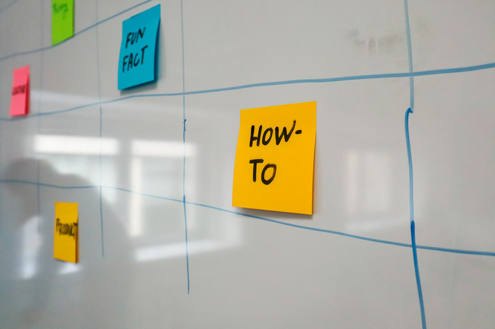

Post 3 to 5 times per week on your main platform, then add daily Google Business Profile activity on top. That single rule covers most local small businesses, from plumbers to bakeries to dental offices. You do not need to post every day on every channel. You need a schedule you can actually keep for 12 months straight, because consistency is what moves the needle.

Buffer analyzed over 100,000 user accounts and found that consistent posting drives 5x more engagement than irregular posting (Source: Buffer Social Media Frequency Guide 2026). That stat is the whole game for small business owners. A steady cadence of three quality posts per week beats a heroic seven-day sprint followed by three weeks of silence. Below you will find platform-by-platform numbers, a weekly schedule you can copy, and the content types that actually generate phone calls.
The Honest Answer: Pick One Main Platform, Post 3 To 5 Times A Week
Most small business owners try to run Facebook, Instagram, TikTok, LinkedIn, and X all at once. Within six weeks, every account looks abandoned. Pick one. The platform where your customers already spend time.

Here is how to choose in 30 seconds:
- Home services, restaurants, retail, salons: Facebook or Instagram.
- B2B services, consultants, accountants, commercial trades: LinkedIn.
- Visual trades like landscaping, remodeling, auto detailing: Instagram.
- Younger demographics, food, fitness, fashion: TikTok or Instagram Reels.
Once you pick, commit to 3 to 5 posts per week on that platform for 90 days. No exceptions. Hootsuite recommends 3 to 5 posts per week on Instagram, 1 to 2 per day on Facebook and LinkedIn, and 2 to 3 per day on X (Source: Hootsuite Posting Frequency Guide 2025). Those numbers are ceilings for businesses with marketing teams. For a solo owner or a small staff, the low end of each range is your target.
Add a second platform only after you have hit 12 weeks of consistent posting on the first one. Most owners never need a second platform. Your Google Business Profile counts as your second channel by default, and it is more important than any social network for getting calls.
What The Frequency Studies Actually Show
The data on posting more often is real, but it favors businesses that already have a content engine. You should know the numbers before you decide where to push.
LinkedIn rewards heavy posters the most. Accounts posting 11 or more times per week earn nearly 17,000 more impressions per post and 3x more engagement than accounts posting once a week (Source: Buffer LinkedIn Posting Frequency Study, August 2025). If you run a B2B service and you can produce two posts a day, LinkedIn will pay you back. Most local owners cannot, and that is fine.
Instagram shows a similar pattern at lower volume. Accounts posting 10 or more times weekly grow followers at +0.66% per week, while accounts posting once or twice weekly grow at only +0.12% (Source: Buffer Social Media Frequency Guide 2026). The growth gap is real, but +0.66% per week is still slow follower growth. For a local business, follower count is not the goal. Phone calls and booked appointments are the goal, and you can get those at lower posting volumes if your content is good.
Translation: more posts equal more reach, but reach does not equal revenue. A roofer with 400 local followers and one strong testimonial reel per week will out-earn a roofer with 8,000 random followers and daily fluff.
Your Realistic Weekly Schedule
A VerticalResponse survey found that 43% of small business owners spend about 6 hours per week on social media marketing (Source: VerticalResponse Small Business Survey). Six hours is your budget. Here is how to spend it.
Monday, 60 minutes: Plan the week. Write captions for 3 posts. Pull 3 photos from your phone of jobs, customers, food, products, or your team.
Tuesday, 45 minutes: Record one short-form video on your phone. 30 to 60 seconds. Show a process, a finished job, a customer reaction, or answer a common question.
Wednesday, 30 minutes: Post your first piece of content. Reply to every comment within 4 hours. Update your Google Business Profile with one new photo.
Thursday, 45 minutes: Edit and post the video from Tuesday. Reply to comments and DMs.
Friday, 60 minutes: Post your third piece of content, a customer testimonial or before-and-after. Send a follow-up DM to anyone who engaged this week.
Saturday, 30 minutes: Post a Google Business Profile update. A photo from a recent job with two sentences of context.
Sunday, 30 minutes: Review the week. Note which post got the most saves, comments, or DMs. That becomes the template for next week.
That schedule produces 3 social posts plus 2 Google Business Profile updates per week, in 5 hours and 20 minutes. You stay inside your 6 hour budget with 40 minutes of slack for the week when a customer calls and pulls you off track.
Use Short-Form Video Or Lose Out On The Best ROI
If you only change one thing about your content mix, switch to short-form vertical video. Sprout Social reports that short-form video delivers 71% higher ROI than other content formats (Source: Sprout Social ROI Statistics 2026). That is the largest single-format gap in any content study I have seen for small business.
You do not need a camera, a tripod, or editing software. You need your phone and 60 seconds.
Here are six video formats that work for any local business:
- Before and after: 5 seconds of the problem, 5 seconds of the solution, 5 seconds of the customer reaction.
- One question, one answer: Pick a question you get every week and answer it on camera in 30 seconds.
- Behind the scenes: Show your team setting up, prepping a job site, or restocking shelves.
- Day in the life: 4 to 6 clips of 5 seconds each, stitched together with a single caption.
- Customer reaction: Record permission, then film the moment they see the finished work.
- Myth busting: Pick a piece of bad advice in your industry and correct it in 45 seconds.
Film 2 or 3 videos in one session. Post them across the week. That single hour of filming covers your video content for 7 to 10 days.
What To Actually Post (And What To Skip)
Quality content for a local business almost always falls into one of five buckets. If your post does not fit one of these, do not post it.
Proof of work: Photos and videos of finished jobs, completed projects, plated meals, packaged orders, finished installations. This is your highest-converting content.
Real customers: Testimonials in their own words. Quotes over a photo of the work. Short video clips of customers reacting. With permission only.
Behind the scenes: Your team on a job. Your morning prep. A new piece of equipment. The honest stuff your competitors hide.
Useful answers: One question, one answer. Skip the long captions. Get to the answer in the first sentence.
Community moments: A local event you sponsored. A local charity you support. A neighboring business you partner with. This is how you signal that you are part of the place, not just a business in the place.
Skip these completely: generic motivational quotes, stock photos with text overlays, holiday graphics with no connection to your business, reposts of other people's content with no commentary, anything that mentions politics, and any post that does not include a clear next step.
Every post needs one of three calls to action: "call us at [your number]," "book online at [your link in bio]," or "DM us the word [keyword] to get started." If a post has no next step, it is decoration, not marketing.
How To Stay Consistent When Work Gets Busy
The single biggest reason small business owners fall off social media is that a real job, a real customer, or a real emergency pulls them away. Build the schedule for the bad weeks, not the good ones.
Batch content monthly. Pick one Saturday morning per month. Record 8 to 12 short videos in 90 minutes. Shoot 30 photos of finished work, your team, your space. That stockpile carries you through the next 4 to 5 weeks of posting, even when the job calendar fills up.
Schedule posts in advance. Use Buffer, Later, Metricool, or Meta Business Suite. Free tiers cover everything a small business needs. Schedule a week of content every Sunday night in 30 minutes. You will never miss a post because you were on a job site at 9 a.m.
Set a minimum. On your worst week, you will still post 2 times and update your Google Business Profile once. That floor protects the algorithm signal that you are an active business. Falling silent for three weeks resets your reach and you have to climb back from zero.
Track one number per month. Phone calls from your Google Business Profile, or DM inquiries, or appointment bookings. Not followers, not likes. The number that pays your bills. If that number is going up over 90 days, your schedule is working. If not, change the content type, not the posting frequency.
Start your batch session this weekend. Block 90 minutes on Saturday morning, charge your phone, and shoot 8 short videos plus 20 photos. Schedule the first week into your platform of choice on Sunday. By the end of next month, you will have a posting habit that survives your busiest season, a Google Business Profile that ranks above your competitors, and the only metric that matters going in the right direction.